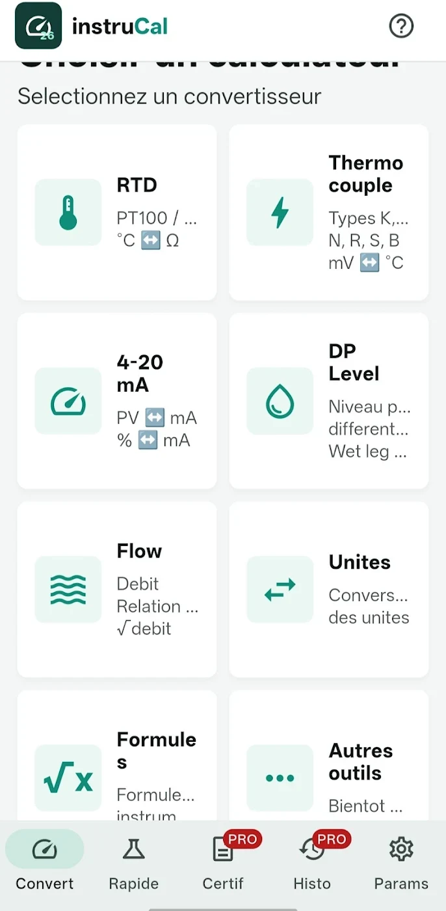

Disponible sur Android
InstruCal Pro
Conversions industrielles, étalonnage et certificats PDF dans une application de terrain.
Éditeur de logiciels et applications mobiles
TATAZ TECH LLC édite des logiciels et des applications mobiles pour les professionnels et les entreprises. Découvrez InstruCal Pro et nos projets dédiés à la maintenance, à la métrologie et au suivi de projets.

Disponible sur Android
Conversions industrielles, étalonnage et certificats PDF dans une application de terrain.
Découvrez le produit disponible et les projets en préparation.
Instrumentation et étalonnage
Conversions industrielles, certificats PDF, contrôles de vannes et de soupapes, et simulation de régulation sur Android.
Interventions et maintenance
Application prévue pour la gestion des interventions et de la maintenance.
Métrologie multidomaine
Projet de métrologie multidomaine actuellement en maintenance.
Gestion et suivi de projets
Projet de gestion et de suivi de projets actuellement en maintenance.